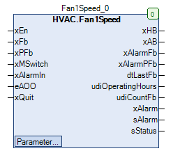

Fan1Speed (FB)¶
FUNCTION_BLOCK Fan1Speed
Kurzbeschreibung¶
Steuerung eines einstufigen VentilatorsZusatzfunktionen: Luftmangelüberwachung, Betriebsüberwachung, Reparaturschalter, Handübersteuerung, StatusanzeigeTypische Anwendung: Steuerung eines Raum - Abluftventilators
Darstellung¶

Schnittstellen¶
Eingänge¶
Name Datentyp Wertebereich Initialwert Funktion xEn BOOL Anforderung des Ventilators xFb BOOL Betriebsmeldung des Ventilators xPFb BOOL Meldung der Luftmangelsituation xMSwitch BOOL Meldung des Reparaturschalters xAlarmIn BOOL Störmeldung des Ventilators eAOO HVACTYPES.eManBin HVACTYPES.eManBin.Auto, HVACTYPES.eManBin.ManOff, HVACTYPES.eManBin.ManOn HVACTYPES.eManBin.Auto Betriebsart der Handübersteuerung - Hardware xQuit BOOL FALSE Rücksetzung der Störmeldungen ( Betriebsüberwachung, Luftmangelüberwachung )
Ausgänge¶
Name Datentyp Wertebereich Initialwert Funktion xHB BOOL Freigabe - Ventilator nach Handübersteuerung xAB BOOL Freigabe - Ventilator vor Handübersteuerung xAlarmFb BOOL Störmeldung der Betriebsüberwachung xAlarmPFb BOOL Störmeldung der Luftmangelüberwachung dtLastFb DATE_AND_TIME Datum / Uhrzeit des letzten Betriebs des Ventilators udiOperatingHours UDINT Betriebsstunden der Umwälzpumpe udiCountFb UDINT Anzahl der Einschaltungen der Umwälzpumpe xAlarm BOOL Sammelstörmeldung sAlarm STRING Meldungstexte für Störungen sStatus STRING Meldungstexte für den Betriebsstatus
Sollwerte / Parameter¶
Name Datentyp Wertebereich Initialwert Funktion udiPFbControlTime UDINT 1 bis 3600s 30s Meldeverzögerung der Luftmangelüberwachung xAlarmControl BOOL FALSE Einfluss von xAlarm auf xAB udiFbControlTime UDINT 0 ... 300s 60s Meldeverzögerung der Betriebsüberwachung xFbControl BOOL TRUE Freigabe / Sperrung der Betriebsüberwachung eManModeB eMANBIN eMANBIN.Auto, eMANBIN.ManOff, eMANBIN.ManOn eMANBIN.Auto Betriebsart der Handübersteuerung für den digitalen Ausgang xHB
Funktionsbeschreibung¶
Allgemeines¶
Dieser Funktionsbaustein steuert einen einstufigen Ventilator.
Es kommen im Wesentlichen folgende Funktionsbausteine zur Anwendung:
Freigabe - Ventilator vor Handübersteuerung xAB¶
Die Freigabe - Ventilator vor Handübersteuerung xAB wird durch die Anforderung des Ventilators xEn, die Sammelstörmeldung xAlarm,
die Meldung des Reparaturschalters xMSwitch, den Parameter xAlarmControl und die Luftmangelüberwachung beeinflusst.
Die Freigabe - Ventilator vor Handübersteuerung xAB ist aktiv ( = TRUE ), falls folgende Zustände gleichzeitig vorliegen:
Fall 1:
xEn = TRUE ( Anforderung aktiv )
xAlarm = FALSE ( Sammelstörmeldung nicht aktiv )
xMSwitch = TRUE ( Motorschutzschalter nicht ausgelöst )
xAlarmControl = FALSE ( Sammelstörmeldung und Luftmangelüberwachung nicht berücksichtigt )
Fall 2:
xEn = TRUE ( Anforderung aktiv )
xAlarm = FALSE ( Sammelstörmeldung nicht aktiv )
xMSwitch = TRUE ( Motorschutzschalter nicht ausgelöst )
xAlarmControl = TRUE ( Sammelstörmeldung und Luftmangelüberwachung berücksichtigt )
Luftmangel = FALSE ( Luftmangel nicht aktiv )
In allen übrigen Situationen ist die Freigabe - Ventilator vor Handübersteuerung xAB nicht aktiv ( = FALSE ).
Freigabe - Ventilator nach Handübersteuerung xHB¶
Die Freigabe - Ventilator vor Handübersteuerung xHB entspricht der Freigabe - Ventilator vor Handübersteuerung xAB,
zusätzlich erweitert um ein Handübersteuermodul.
xAB eManModeB xHB Hinweise FALSE eMANBIN.Auto FALSE Handübersteuermodul in Automatik TRUE eMANBIN.Auto TRUE Handübersteuermodul in Automatik X eMANBIN.ManOn TRUE Handübersteuermodul in Handbetrieb Ein X eMANBIN.ManOff FALSE Handübersteuermodul in Handbetrieb Aus
Legende: X = beliebig
Meldung des Reparaturschalters xMSwitch¶
xMSwitch = TRUE: Reparaturschalter wurde nicht ausgelöst ( Normalzustand )
xMSwitch = FALSE: Reparaturschalter wurde ausgelöst ( Fehlerzustand )
Betriebsstunden und Einschaltvorgänge¶
Die Anzahl der Betriebsstunden und der Einschaltvorgänge werden erfasst ( = Zählprozess aktiv ), falls die Betriebsmeldung
des Ventilators xFb aktiv ist und gleichzeitig die Sammelstörmeldung xAlarm nicht aktiv ist ( = FALSE ).
Die Ergebnisse stehen an den Zählerausgängen udiOperatingHours und udiCountFb zur Verfügung.
Datum / Uhrzeit des letzten Betriebs des Ventilators dtLastFb¶
Am Ausgang dtLastFb steht während des Zählprozesses das aktuelle Datum / die aktuelle Uhrzeit zur Verfügung.
Am Ausgang dtLastFb steht ausserhalb des Zählprozesses das Datum / die Uhrzeit am Ende des letzten Zählprozesses zur Verfügung.
Am Ausgang dtLastFb wird vor dem ersten Zählprozess der Initialisierungswert DT#1970-1-1-0.0.0 ausgegeben.
Betriebsüberwachung¶
Die Betriebsüberwachung kann durch den Sollwert / Parameter xFbControl freigegeben ( = TRUE ) oder gesperrt ( = FALSE ) werden.
Bei gesperrter Überwachung wird die Störmeldung der Betriebsüberwachung xAlarmFb immer gesperrt ( = FALSE ).
Bei freigegebener Überwachung wird die Störmeldung der Betriebsüberwachung xAlarmFb aktiviert ( = TRUE ), falls
gleichzeitig während einer Mindestzeitdauer udiFbControlTime folgende Zustände gegeben sind:
xHB und xFb = ungleich ( Freigabezustand und Betriebszustand stimmen nicht überein )
eAOO = HVACTYPES.eManBin.Auto ( Handübersteuerung - Hardware in Automatik )
xFbControl = TRUE ( Betriebsüberwachung ist freigegeben )
Die Störmeldung der Betriebsüberwachung xAlarmFb wird zurück gesetzt ( = FALSE ), falls mindestens eine der nachfolgenden
Bedingungen erfüllt ist:
eAOO = HVACTYPES.eManBin.Auto ( Rückschaltung in den Automatikbetrieb der Handübersteuerung - Hardware )
xQuit = TRUE ( Rücksetzung der Störmeldungen ist aktiv )
xFbControl = FALSE ( Betriebsüberwachung gesperrt )
Luftmangelüberwachung¶
Sie dient zur Erkennung einer Luftmangelsituation durch die Auswertung der Signale an den Eingängen
Meldung der Luftmangelsituation xPFb und der Betriebsmeldung des Ventilators xFb.
Der Ausgang - Störmeldung xAlarmPFb wird aktiviert ( xAlarmPFb = TRUE ), falls die unten stehende Bedingungen 1 und 2 gleichzeitig erfüllt sind.
Bedingung 1: Der Eingang für den Differenzdruckschalter xPFb befindet sich mindestens während Wartezeit udiPFbControlTime permanent im Zustand FALSE ( = Luftmangelsituation ).
Bedingung 2: Die Betriebsmeldung für den Ventilator xFb befindet sich mindestens während Wartezeit udiPFControlTime permanent im Zustand TRUE ( = Ventilator in Betrieb ).
Der Ausgang - Störmeldung xAlarmPFb wird in folgenden Fällen deaktiviert ( xAlarmPFb = FALSE ):
Fall 1: Die Bedingungen 1 und / oder 2 sind nicht erfüllt und die Rücksetzung der Störmeldung xQuit ist aktiv ( = TRUE ).
Störungsanzeige¶
Es werden bei Bedarf am Ausgang sAlarm folgende Störungstexte ausgegeben ( 1 = höchste Priorität )
1: ‘Fan Störung Hardware’ ( xAlarmIn = TRUE ) 2: ‘Fan Störung Betriebsüberwachung’ ( xAlarmFb = TRUE ) 3: ‘Fan Störung Luftmangel’ ( Luftmangelstörung = TRUE ) 4: ‘Fan Störung Reparaturschalter’ ( *xMSwitch = FALSE ) 5: ‘’ ( keine Störung aktiv )
Sammelstörmeldung xAlarm¶
Die Sammelstörmeldung wird aktiviert ( = TRUE ), falls mindestens eine der nachfolgend beschriebenen Bedingungen erfüllt ist.
xAlarmIn = TRUE ( Störmeldung des Ventilators ist aktiv )
xAlarmFB = TRUE ( Fehler aus der Betriebüberwachung )
Luftmangel = TRUE ( Fehler aus der Luftmangelüberwachung )
xMSwitch = FALSE ( Reparaturschalter wurde ausgelöst )
In allen übrigen Fällen ist die Sammelstörung nicht aktiv ( = FALSE ).
Statusanzeige¶
Es werden bei Bedarf am Ausgang sStatus folgende Statustexte ausgegeben ( 1 = höchste Priorität )
1: ‘Inhalt von sAlarm‘ ( sAlarm ungleich ‘’ ) 2: ‘Ein über Automatik’ ( eAOO = HVACTYPES.eManBin.Auto UND eManModeB = eMANBIN.Auto UND xFb = TRUE ) 3: ‘Aus über Automatik’ ( eAOO = HVACTYPES.eManBin.Auto UND eManModeB = eMANBIN.Auto UND xFb = FALSE ) 4: ‘Ein über Hand Software’ ( eAOO = HVACTYPES.eManBin.Auto UND eManModeB ungleich eMANBIN.Auto UND xFb = TRUE ) 5: ‘Aus über Hand Software’ ( eAOO = HVACTYPES.eManBin.Auto UND eManModeB ungleich eMANBIN.Auto UND xFb = FALSE 6: ‘Ein über Hand Hardware’ ( eAOO = ungleich HVACTYPES.eManBin.Auto UND xFb = TRUE ) 7: ‘Aus über Hand Hardware’ ( eAOO = ungleich HVACTYPES.eManBin.Auto UND xFb = FALSE )
Visualisierung¶
Information¶
Element Autoren Datum Version Anmerkungen Funktion Alexander Halter 10.2017 1.0 Ursprungsversion Programmierung Adam Bartod 10.2017 1.0 Ursprungsversion Test Alexander Halter 10.2017 1.0 Ursprungsversion Dokumentation Jochen Reu 11.2017 1.0 Ursprungsversion
Codesys¶
- InOut:
Scope Name Type Initial Comment Input xEn BOOL Anforderung des Ventilators xFb BOOL Betriebsmeldung des Ventilators xPFb BOOL Meldung der Luftmangelsituation xMSwitch BOOL Meldung des Reparaturschalters xAlarmIn BOOL Störmeldung des Ventilators eAOO eManBin HVACTYPES.eManBin.Auto Betriebsart der Handübersteuerung - Hardware xQuit BOOL FALSE Rücksetzung der Störmeldungen ( Betriebsüberwachung, Luftmangelüberwachung ) Output xHB BOOL Freigabe - Ventilator nach Handübersteuerung xAB BOOL Freigabe - Ventilator vor Handübersteuerung xAlarmFb BOOL Störmeldung der Betriebsüberwachung xAlarmPFb BOOL Störmeldung der Luftmangelüberwachung dtLastFb DT Datum / Uhrzeit des letzten Betriebs des Ventilators udiOperatingHours UDINT Betriebsstunden der Umwälzpumpe udiCountFb UDINT Anzahl der Einschaltungen des Ventilators xAlarm BOOL Sammelstörung sAlarm STRING Meldungstexte für Störungen sStatus STRING Meldungstexte für den Betriebsstatus Input udiPFbControlTime UDINT 30 Meldeverzögerung der Luftmangelüberwachung xAlarmControl BOOL FALSE Einfluss von xAlarm auf xAB udiFbControlTime UDINT 60 Meldeverzögerung der Betriebsüberwachung xFbControl BOOL TRUE Freigabe / Sperrung der Betriebsüberwachung eManModeB eMANBIN eMANBIN.Auto Betriebsart der Handübersteuerung für den digitalen Ausgang xHB